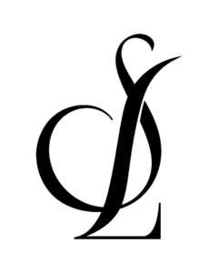

Trade Mark Journal No.2025/010 7 March 2025
UK00004161294 17 February 2025 (8,11,21,26)

- Class 8
- Electric hair straighteners; Hair straightening irons; Electric hair straightening irons; Electric hair curling irons; Electric irons for styling hair; Hair styling appliances; Hair clippers; Hair straightening irons; Hair clippers for babies; Electric hair straighteners; Electric hair braiders; Hair braiders, electric; Hair-removing tweezers; Non-electric hair clippers; Hand-operated hair clippers; Hairdressing scissors; Electric hair clippers; Electric hair crimpers; Hair cutting scissors; Scissors; Electric hair trimmers; Electric hair crimper; Hair styling appliances; Electric irons for styling hair; Electric hand-held hair styling irons; Electric hair straightening irons.
- Class 11
- Dryers (Hair -); Hair dryers; Electric hair dryers; Hair driers [dryers]; Electrical hair driers; Travel hair dryers; Hair drying appliances; Hair driers; Driers (Hair -); Hair driers for use in beauty salons; Dryers (Hair -); Hair dryers; Driers (Hair -); Hair driers; Hair driers for use in beauty salons; Shampoo bowls; Towel steamers for hair salons; Hand-held electric hair dryers; Electric hair dryers; Hair steamers for beauty salon use; Hair drying machines for beauty salon use; Hair dryers [for household purposes]; Electrical hair driers; Hair steamers for use in beauty salons; Travel hair dryers.
- Class 21
- Hair combs; Combs for back-combing hair; Hair brushes; Hair for brushes; Large-toothed combs for the hair; Combs for the hair (Large-toothed -); Electric hair combs; Shampoo brushes; Shampoo dispensers; Shampoo racks; Shampoo shields; Shampoo holders; Hair fixer dispensers; Combs; Cleaning combs; Combs (Electric -); Electric combs; Comb cases; Hairbrushes; Electrically heated hair brushes.
- Class 26
- Hair curlers; Electric hair curlers; Non-electric hair curlers; Hair clips; Hair rollers; Hair scrunchies; Hair elastics; Hair curl clips; Electric hair rollers; Non-electric hair rollers; Hair rollers (Non-electric -); Hair ribbons; Ribbons for the hair; Hair weaves; Tresses of hair; Hair (Tresses of -); Hair tresses; Plaits of hair; Hair ornaments, hair rollers, hair fastening articles, and false hair; Hair scrunchies; Hair barrettes; Hair curlers; Plaited hair; Hair (Plaited -); Hair twisters [hair accessories]; Hair elastics; Bows for the hair; Hair bows; Hair extensions; Hair ribbons; Ribbons for the hair; Hair weaves; Hair ribbons for Japanese hair styling (tegara); Hair rollers; Hair ornaments in the nature of hair wraps; Hair tassel strings for Japanese hair styling (motoyui); Hair pins; Pins for the hair; Hair clips; Sticks for use in styling the hair; Synthetic hair; False hair for Japanese hair styling (kamoji); Hair curl clips; Ornaments (Hair -); Ornaments for the hair; Hair ornaments; Hair tassel ornaments for Japanese hair styling (negake); Human hair; Hair bands; Bands for the hair; Bands (Hair -); Electric hair curlers; Hair pieces; Hair curling pins; Ornamental hair pins for Japanese hair styling (kogai); Hair wraps; Non-electric hair curlers; Hair curlers, electric and non-electric, other than hand implements; Non-electric hair rollers; Hair rollers (Non-electric -); Hair nets; Nets (Hair -); Hair pins and grips; Claw clips [hair accessories]; Wigs; Hairpieces; Tape for fixing wigs; False hairpieces; Hair ornaments in the form of combs; Ponytail holders and hair ribbons; Twisters [hair accessories]; Hair decorations; Hair buckles; Hair frosting caps; Fibres for use as replacement hair; Hair netting; Elasticated hair ribbons.
SHARPELINE LTD
Representative: Corpinal IP Limited